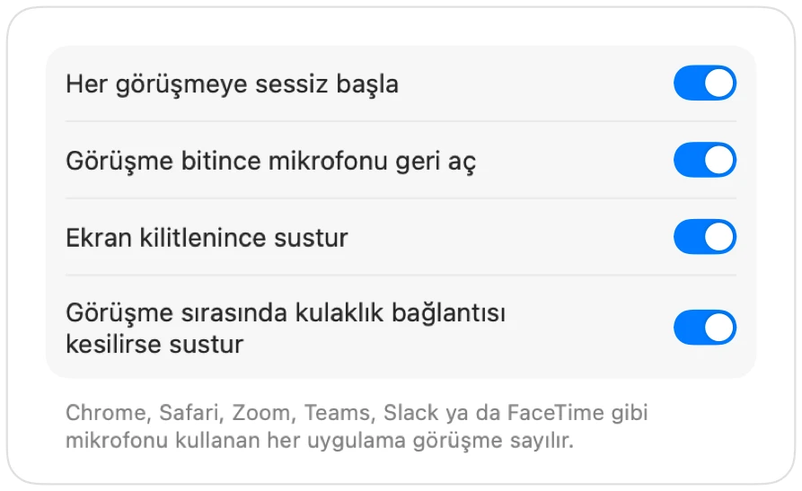

Mac'te AirPods ile Microsoft Teams nasıl susturulur?
Teams kısayolu olan Command-Shift-M, yalnızca Teams penceresi etkinken çalışır. Toplantı anında genelde başka bir yerdesindir: belgede, tarayıcıda ya da paylaşılan bir ekranda.
Muffle hem Teams uygulamasında hem de web üzerindeki Teams görüşmelerinde mikrofonunu her yerden susturur. AirPods sapına bas, tek bir kısayola tıkla ya da menü çubuğunu kullan.
Teams görüşmesini her yerden sustur
- 1
Muffle uygulamasını yükle ve mikrofon izni ver.
- 2
Teams toplantına katıl.
- 3
Susturmak için Control-Option-M tuşlarına veya AirPods sapına bas. Menü çubuğu ikonu kırmızıya döner.
- 4
Mikrofonu açmak için tekrar bas ya da sessizdeyken konuşmak için kısayolu basılı tut.

- Tarayıcı sekmesindeki Teams toplantıları, Muffle sayesinde tıpkı Google Meet gibi AirPods desteğine kavuşur.
- Bilgisayar başından kalktığında mikrofonunun açık kalmaması için “Ekran kilitlenince sustur” seçeneğini etkinleştir.
Sorular
Teams uygulamasında AirPods basışı çalışır mı?
Teams sürümüne göre değişir, çünkü Teams bazen basışı kendisi alabilir. Muffle kısayolu ve menü çubuğu düğmesi ise her durumda çalışır.
Teams beni sessizde olarak gösterir mi?
Her zaman değil. Muffle doğrudan donanım mikrofonunu susturur; bu yüzden görüşmedekiler sessizlik duysa da Teams mikrofonu açık gösterebilir.